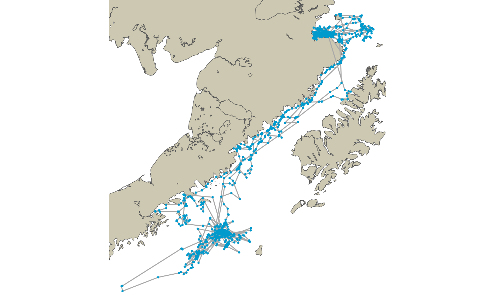
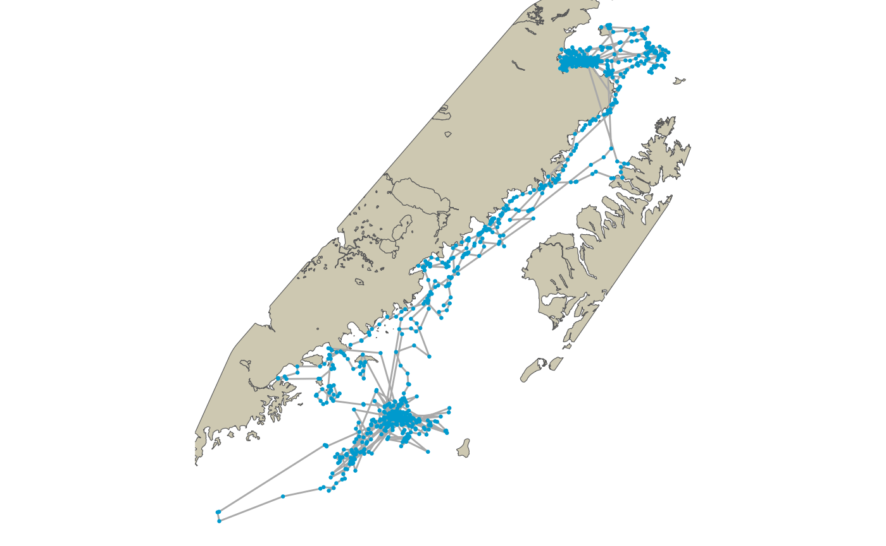

Re-routing Harbor Seal Movement Tracks Around Land with {pathroutr}
akharborseal_demo.Rmd
library(pathroutr)Alaska Harbor Seal Example
The purpose of this is to demonstrate a more ‘real world’ use of {pathroutr} for re-routing of marine animal movement around land features. Here, we will use the Alaska harbor seal data provided in the {crawl} package to:
- demonstrate and data wrangling and pre-processing needed
- use
{crawl}’s movement model to predict the most likely path - re-route the predicted path around any land barriers
- repeat the process but using
{crawl}’s multiple imputation functionality to create a set of possible predicted paths that span model uncertainty
Pre-processing Track Data and Land Polygon Data
For our land data, we will source in the Alaska 1:250000 coastal data polygon. This is provided by the Alaska Department of Natural Resources and was obtained from their open data portal (https://gis.data.alaska.gov/datasets/alaska-1250000). Here, we’ll pull the data directly from the portal API. Note, only those polygons that intersect with the bounding box of our harbor seal movement are included.
library(sf)
#> Linking to GEOS 3.8.1, GDAL 3.1.1, PROJ 6.3.1
# akcoast_qry <- "https://arcgis.dnr.alaska.gov/arcgis/rest/services/OpenData/Physical_AlaskaCoast/MapServer/2/query?where=1%3D1&outFields=*&geometry=-159.240%2C55.112%2C-152.422%2C59.413&geometryType=esriGeometryEnvelope&inSR=4326&spatialRel=esriSpatialRelIntersects&outSR=3338&f=json"
#
# akcoast <- sf::read_sf(akcoast_qry)
# akcoast <- sf::st_make_valid(akcoast)
data("akcoast")Now, let’s load in our harbor seal data from the {crawl} package
library(crawl)
#> crawl 2.2.3 (2019-04-30)
#> Demos and documentation can be found at our new GitHub repository:
#> https://dsjohnson.github.io/crawl_examples/
data("harborSeal_sf")
harborSeal_sf <- harborSeal_sf %>% sf::st_transform(3338)And, we’ll plot things to make sure everything looks good
library(ggplot2)
library(ggspatial)
library(dplyr)
#>
#> Attaching package: 'dplyr'
#> The following objects are masked from 'package:stats':
#>
#> filter, lag
#> The following objects are masked from 'package:base':
#>
#> intersect, setdiff, setequal, union
l <- harborSeal_sf %>% dplyr::filter(!sf::st_is_empty(.)) %>%
summarise(do_union = FALSE) %>% st_cast('LINESTRING')
ggplot() +
ggspatial::annotation_spatial(akcoast, fill = "cornsilk3", size = 0) +
ggspatial::layer_spatial(l, color = "darkgrey", size = 0.5) +
ggspatial::layer_spatial(harborSeal_sf, color = "deepskyblue3", size = 0.5) +
theme_void()
Re-Route Raw Observations
While the preferred approach would be to rely on a movement model for predicting the path of our seal, it can sometimes be useful to just correct the raw observations. So, that’s what we’ll do first.
With such a large geographic area, the computational time needed to create our visibility graph could be quite large. So, we will want to limit our land polygon as much as we reasonably can.
We’ll do this by creating a convex hull boundary around our observed data and limiting the region to this space.
land_region <- sf::st_buffer(harborSeal_sf, dist = 35000) %>%
sf::st_union() %>%
sf::st_convex_hull() %>%
sf::st_intersection(akcoast) %>%
st_collection_extract('POLYGON') %>%
st_sf()
ggplot() +
ggspatial::annotation_spatial(land_region, fill = "cornsilk3", size = 0) +
ggspatial::layer_spatial(l, color = "darkgrey", size = 0.5) +
ggspatial::layer_spatial(harborSeal_sf, color = "deepskyblue3", size = 0.5) +
theme_void() At this point, we are ready to create our visibility graph using the
At this point, we are ready to create our visibility graph using the pathroutr::prt_visgraph() function. We’ll set centroids = FALSE in order to speed up the build.
NOTE: this will take about 30 min to build
library(tictoc)
tic()
vis_graph <- prt_visgraph(land_region, centroids = FALSE)
toc()And, let’s take a look at our network.
data("vis_graph")
ggplot() +
ggspatial::annotation_spatial(land_region, fill = "cornsilk3", size = 0) +
ggspatial::layer_spatial(vis_graph@sl, size = 0.5) +
theme_void()
track_pts <- harborSeal_sf %>% dplyr::filter(!sf::st_is_empty(.))
segs_tbl <- get_barrier_segments(track_pts,land_region)
segs_tbl <- segs_tbl %>% prt_nearestnode(vis_graph, maxdist = 50000)
segs_tbl
#> # A tibble: 44 x 8
#> sid start_idx end_idx n_pts start_pt
#> <int> <dbl> <dbl> <dbl> <POINT [m]>
#> 1 1 70 72 1 (-7141.435 1009874)
#> 2 2 211 213 1 (17825.82 1009686)
#> 3 3 296 298 1 (-166514.5 678462.8)
#> 4 4 299 301 1 (-166385.8 678569.6)
#> 5 5 310 312 1 (-159772 672617.8)
#> 6 6 313 315 1 (-168417.8 679098.1)
#> 7 7 346 348 1 (-166934.5 680376.9)
#> 8 8 372 375 2 (-167836 679632.4)
#> 9 9 390 392 1 (-164953 673937.4)
#> 10 10 398 400 1 (-163341.9 680010)
#> # … with 34 more rows, and 3 more variables: end_pt <POINT [m]>,
#> # start_node <int>, end_node <int>
segs_tbl <- segs_tbl %>% prt_shortpath(vis_graph)
ggplot() +
ggspatial::annotation_spatial(land_region, fill = "cornsilk3", size = 0) +
ggspatial::layer_spatial(segs_tbl$geometry, color = "deepskyblue3") +
theme_void()
This last bit is the point where we insert the fixed points back into our original path.
track_pts_fix <- prt_update_points(track_pts, segs_tbl)
track_line_fixed <- track_pts_fix %>% summarise(do_union = FALSE) %>% st_cast('LINESTRING')
ggplot() +
ggspatial::annotation_spatial(land_region, fill = "cornsilk3", size = 0) +
ggspatial::layer_spatial(track_line_fixed, color = "darkgrey", size = 0.5) +
ggspatial::layer_spatial(track_pts_fix, color = "deepskyblue3", size = 0.5) +
theme_void() Let’s fit a movement model
Let’s fit a movement model
##Fit model as given in Johnson et al. (2008) Ecology 89:1208-1215
## Start values for theta come from the estimates in Johnson et al. (2008)
fixPar = c(log(250), log(500), log(1500), rep(NA,5), 0)
displayPar( mov.model=~1, err.model=list(x=~Argos_loc_class-1),data=harborSeal_sf,
activity=~I(1-DryTime),fixPar=fixPar)
#> ParNames fixPar thetaIdx
#> 1 ln tau Argos_loc_class0 5.521461 NA
#> 2 ln tau Argos_loc_class1 6.214608 NA
#> 3 ln tau Argos_loc_class2 7.313220 NA
#> 4 ln tau Argos_loc_class3 NA 1
#> 5 ln tau Argos_loc_classA NA 2
#> 6 ln tau Argos_loc_classB NA 3
#> 7 ln sigma (Intercept) NA 4
#> 8 ln beta (Intercept) NA 5
#> 9 ln phi 0.000000 NA
constr=list(
lower=c(rep(log(1500),3), rep(-Inf,2)),
upper=rep(Inf,5)
)
set.seed(123)
fit1 <- crwMLE(
mov.model=~1, err.model=list(x=~Argos_loc_class-1), activity=~I(1-DryTime),
data=harborSeal_sf, Time.name="Time",
fixPar=fixPar, theta=c(rep(log(5000),3),log(3*3600), 0),
constr=constr, method="L-BFGS-B",
control=list(maxit=2000, trace=1, REPORT=1)
)
#> Beginning SANN initialization ...
#> Beginning likelihood optimization ...
#> iter 1 value 41202.609844
#> iter 2 value 41056.998394
#> iter 3 value 40756.499671
#> iter 4 value 40146.411888
#> iter 5 value 40066.268387
#> iter 6 value 40005.050127
#> iter 7 value 40001.092459
#> iter 8 value 40001.050325
#> iter 9 value 40001.048541
#> iter 10 value 40001.048534
#> final value 40001.048534
#> converged
print(fit1)
#>
#>
#> Continuous-Time Correlated Random Walk fit
#>
#> Models:
#> --------
#> Movement ~ 1
#> Error ~Argos_loc_class - 1
#>
#>
#> Parameter Est. St. Err. 95% Lower 95% Upper
#> ln tau Argos_loc_class0 5.521 . . .
#> ln tau Argos_loc_class1 6.215 . . .
#> ln tau Argos_loc_class2 7.313 . . .
#> ln tau Argos_loc_class3 7.313 0.182 6.957 7.669
#> ln tau Argos_loc_classA 7.313 0.076 7.165 7.462
#> ln tau Argos_loc_classB 7.313 0.091 7.135 7.492
#> ln sigma (Intercept) 8.421 0.03 8.363 8.48
#> ln beta (Intercept) -0.122 0.149 -0.414 0.17
#> ln phi 0.000 . . .
#>
#>
#> Log Likelihood = -20000.524
#> AIC = 40011.049
pred1 = crwPredict(fit1, predTime = '5 min')
pred1_sf <- pred1 %>% crw_as_sf("POINT","p")
segs_tbl <- get_barrier_segments(pred1_sf,land_region)
segs_tbl <- segs_tbl %>% prt_nearestnode(vis_graph)
segs_tbl
#> # A tibble: 154 x 8
#> sid start_idx end_idx n_pts start_pt
#> <int> <dbl> <dbl> <dbl> <POINT [m]>
#> 1 1 7278 7303 24 (16296.99 1008893)
#> 2 2 7445 7452 6 (13879.22 1009100)
#> 3 3 7456 7462 5 (14334.24 1007460)
#> 4 4 7463 7667 203 (14675.3 1006230)
#> 5 5 7943 7951 7 (46971.14 912298.8)
#> 6 6 7967 7982 14 (44466.22 904097.1)
#> 7 7 9778 9782 3 (-169713.6 678313.5)
#> 8 8 9783 9785 1 (-170220.2 677600.9)
#> 9 9 10572 10590 17 (-167015.2 673230.6)
#> 10 10 10634 10689 54 (-166298.7 678527.9)
#> # … with 144 more rows, and 3 more variables: end_pt <POINT [m]>,
#> # start_node <int>, end_node <int>
segs_tbl <- segs_tbl %>% prt_shortpath(vis_graph)
ggplot() +
ggspatial::annotation_spatial(land_region, fill = "cornsilk3", size = 0) +
ggspatial::layer_spatial(segs_tbl$geometry, color = "deepskyblue3") +
theme_void()
This last bit is the point where we insert the fixed points back into our original path.
track_pts_fix <- prt_update_points(pred1_sf, segs_tbl)
track_line_fixed <- track_pts_fix %>% summarise(do_union = FALSE) %>% st_cast('LINESTRING')
ggplot() +
ggspatial::annotation_spatial(land_region, fill = "cornsilk3", size = 0) +
ggspatial::layer_spatial(track_line_fixed, color = "deepskyblue3", size = 0.5) +
theme_void()